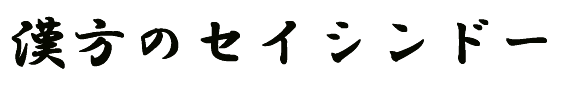

この度は、お買上頂きありがとうございました。
| この封印シールは、当店からお客様のお手元へ、安全にお届けできた事を確認するためのものです。 開封される時は、このシールがはずれていないか、破れたりしわが寄ったり、一度開封したような不自然さがないか？を必ず確認してください。 海外では、配達途中で開封されていたり、通関検査で抜き取られていたりする事もあります。日本国内では、そういう心配はありませんが、将来にわたって国内の秩序が守られているとは限りませんし、悪意で内容物をすり替えられるという事が起こる可能性も否定出来ません。 これらを防止する目的で、この封印シールを貼り付けております。 万が一、開封された形跡がございましたら、絶対に服用しないで直ぐにご連絡ください。 |
ご連絡先
ＴＥＬ ０７７−５６３−４７０２
ＦＡＸ ０７７−５６３−９７１６
mail ms@seisindo.com

Thank you for purchasing our product.
| This seal is placed so as to ensure that the product is delivered safely
to your premises from us. When you open it please ensure that this seal
is not broken, torn, wrinked and/or in normal condition with no hint of
contrivance. In overseas opening during delivery and being taken as a sample
at the Custom could happen. There is no such a concern within Japan at
moment, however, this order is not deemed to last for ever and possibility
of replacement of contents with malicious intent cannot be denied. This
seal is attached so as to prevent these negative events. If by any chance, trace of opening was admitted please refrain from taking it and get in contact with the following: |
The pharmacy specializing in Traditional Chinese Medicine
Kanpo no SEISINDO
Contact: ms@seisindo.com